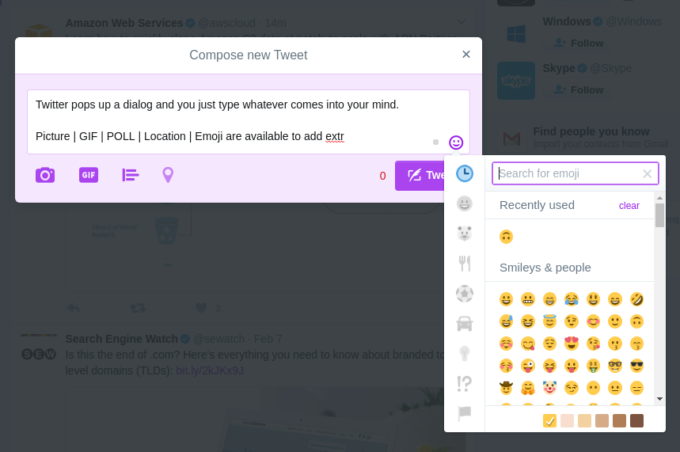

CRUD in Frontend
CRUD(Create Read Update Delete) operations are the basic for persistent storage. Once one has done too much CRUD operations over HTTP(or-some-kind) together with permission management, which can be tedious sometimes however. One has to rethink about what is being done and do something helpful.
Basic Activities for Resources
- [GET] Items List
- [GET] Item Detail
- [POST] Post Item
- [PATCH] Update Item
- [DELETE] Delete Item
Same UI for Posting and Updating?
Posting should be easy and accessed with little effort and then users will be more apt to more posting content.
- Use the same UI.
- Being consistent. Using the same UI do show consistency.
- Fast and convenient coding. It costs less when a project is newly started.
- Code complexity As the project grows, a lot of If-Else will be involved in the code since we have to be clear about whether the current mission is posting or modifying resource wherever we want to display different UI.
- Use different UIs.
- Providing more customized UI. We design different UIs just for different purposes. Designed UIs make users more comfortable.
- Repeated codes. Some codes are shared while some are repeated sometimes, which troubles maintenance.
- Resources consuming. More time and efforts are required to promise users a better experience.
One strategy: use the same UI first and then refactor the codes when either there are a lot of difference or codes become too complex, and often both of them happen at the same time :)
What Others DO
A lot of applications do not even(for-some-reasons) provide methods to update any posts or maybe you just can edit a little tiny part of the post, e.g., adding a location.
Twitter
Compose a tweet: Pop up a dialog and you type whatever you comes into your mind.
You can not modify your tweet.